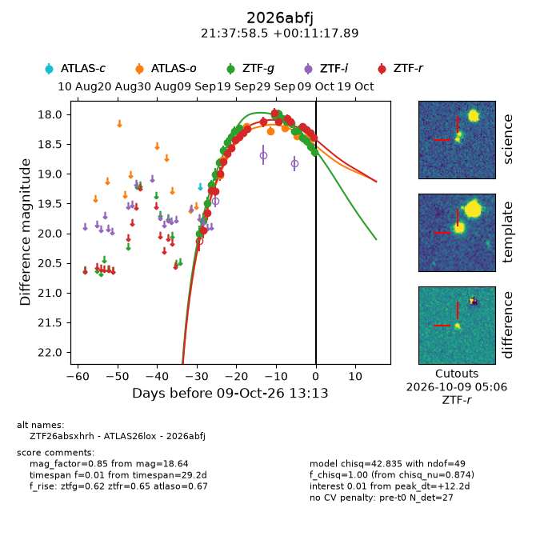
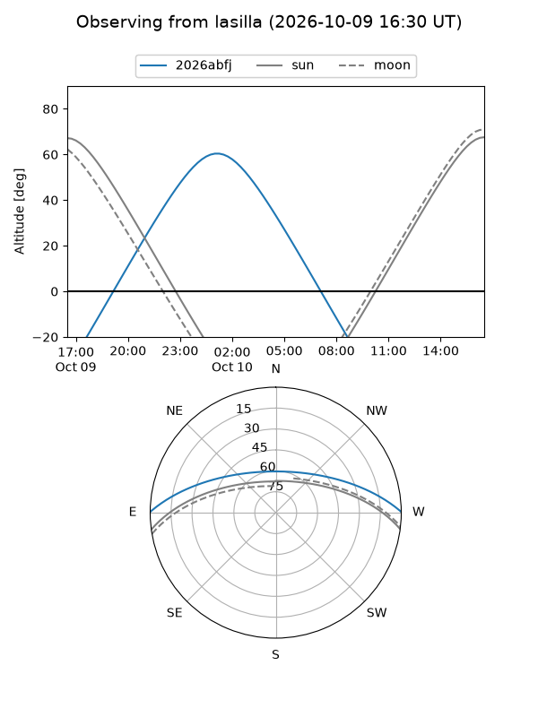
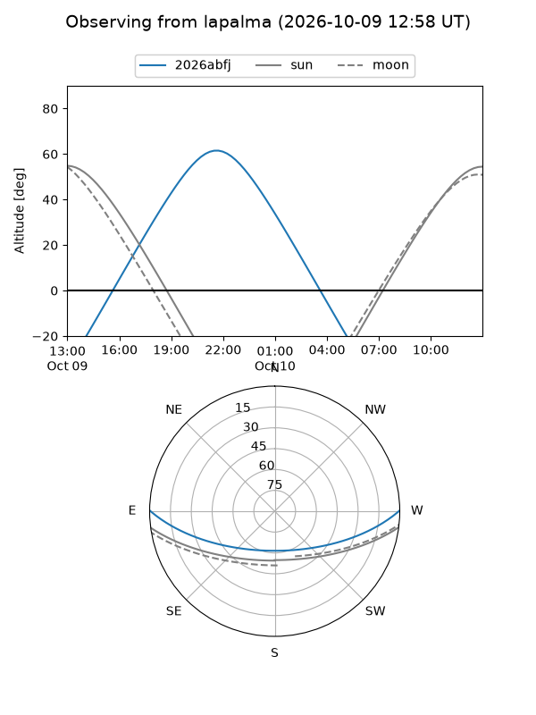
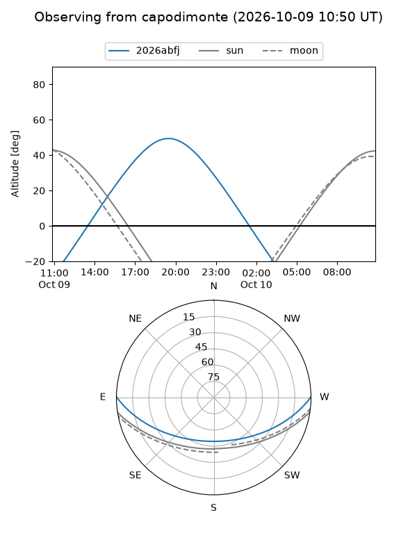
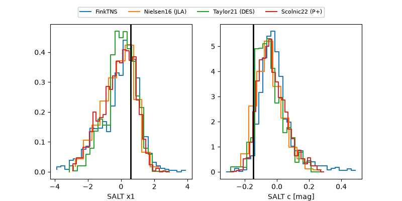

2026abfj
Target 2026abfj at 2026-10-09 13:15
Aliases and brokers:
FINK-ZTF: ztf.fink-portal.org/ZTF26absxhrh
Lasair-ZTF: lasair-ztf.lsst.ac.uk/objects/ZTF26absxhrh
ALeRCE-ZTF: alerce.online/object/ZTF26absxhrh
YSE-PZ: ziggy.ucolick.org/yse/transient_detail/2026abfj
TNS name: wis-tns.org/object/2026abfj
Direct TNS query: direct search
alt names
ZTF26absxhrh (ztf,fink_ztf)
2026abfj (tns,yse)
ATLAS26lox (atlas)
Coordinates:
equatorial (ra, dec) = 324.4936,+0.18830
equatorial (HMS+DMS) = 21:37:58.45,+00:11:17.89
galactic (l, b) = (55.1883,-36.14142)
Flags:
peak dt: +12.2
Photometry:
last atlaso=18.36, ztfg=18.64, ztfr=18.40
7 atlaso, 22 ztfg, 21 ztfr detections
Lightcurve

Visibility



Additional plots
